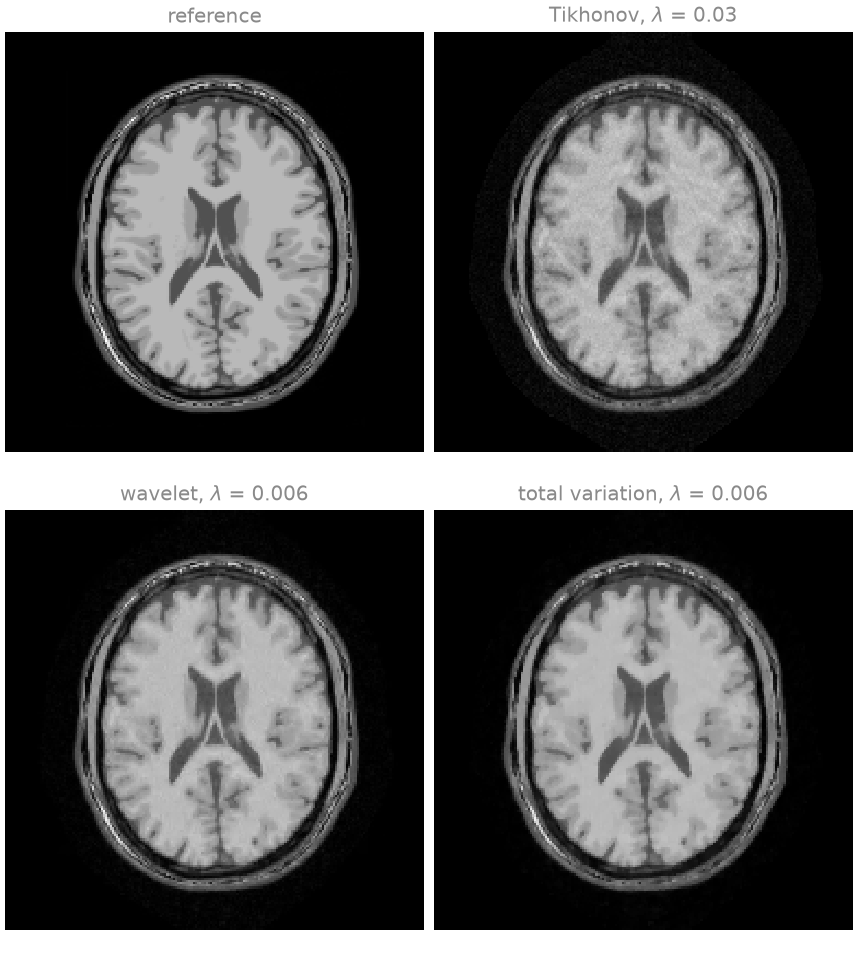
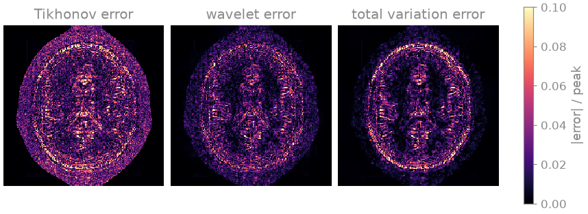
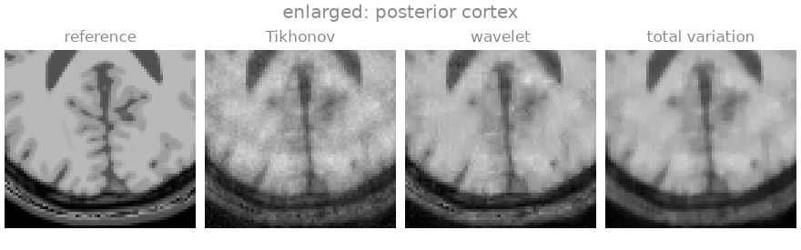
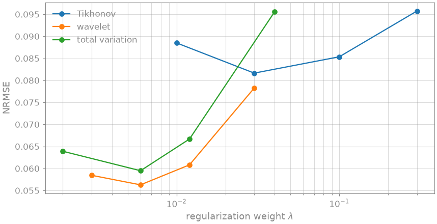
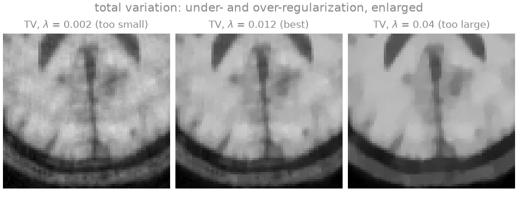

Note
Go to the end to download the full example code.
Regularized reconstruction#
This lesson compares three regularization terms on the same undersampled, noisy SENSE acquisition, shows how the choice of the regularization weight trades residual noise and aliasing against loss of detail, and combines two terms in one reconstruction.
At high acceleration, or low SNR, the SENSE problem is ill-conditioned: the encoding does not determine the image, and a plain least-squares fit amplifies the noise by the g-factor. A reconstruction therefore adds prior knowledge about the image as a penalty,
with \(A\) the SENSE encoding, \(g\) a convex functional,
\(G\) a linear transform and \(\lambda\) the regularization weight.
Tikhonov regularization favours a small image, a wavelet \(\ell_1\)
penalty an image that is sparse in a wavelet basis, as in compressed sensing,
and total variation (TV) an image that is piecewise constant.
bartorch.priors provides BART’s terms \(g(Gx)\) as objects, and
bartorch.apps.pics() solves the problem with the iteration each term
admits. Inverse problems and their solvers introduces the formulation
and the algorithms.
Learning objectives
Pass regularization terms from
bartorch.priorstobartorch.apps.pics(), and choose a solver the term admits.Compare Tikhonov, wavelet \(\ell_1\) and total-variation regularization on the same data, by their images and error maps.
Select a regularization weight by the error against a reference, and recognize under- and over-regularization in the image.
Combine two terms in one reconstruction.
The previous lessons, From k-space to image and Coil sensitivity calibration, reconstructed with a fixed weight. The next lesson, Operators and solvers, assembles the same reconstruction from an operator, a term and a solver.
import csv
from pathlib import Path
import brainweb_dl
import numpy as np
import torch
from brainweb_dl import get_mri
import bartorch
import bartorch.tools as bt
from bartorch import apps, priors
SIZE = 192
COILS = 8
ACCELERATION = 3
CALIBRATION = 24
The phantom is the BrainWeb [1] slice of From k-space to image, with the same eight-channel sensitivities; the cell that builds both is hidden on this page and present in the script this page can be downloaded as.
Acquisition#
A third of the phase encodes (\(R = 3\)), drawn at random from a variable density around a fully sampled ACS region of 24 lines, as in From k-space to image. The noise is three times stronger than in that lesson: complex Gaussian noise of variance \(3 \times 10^{-4}\) per sample of the unitary transform of an image whose peak is one. At this level noise amplification, and not only aliasing, determines the error of an unregularized reconstruction.
kspace = bt.noise(bartorch.fft(sensitivities * image, axes=(-2, -1), unitary=True), n=3e-4, s=42)
encodes = torch.arange(SIZE) - SIZE // 2
centre = (encodes.abs() < CALIBRATION // 2).to(torch.float32)
drawn = torch.multinomial(
(1.0 + 2.0 * encodes.abs() / SIZE) ** -3.0 * (1.0 - centre),
SIZE // ACCELERATION - CALIBRATION,
replacement=False,
generator=torch.Generator().manual_seed(11),
)
lines = centre.clone()
lines[drawn] = 1.0
measured = kspace[:, None] * lines.reshape(SIZE, 1).to(torch.complex64)
maps = bt.ecalib(measured, maps=1, calib_size=CALIBRATION, crop=0.8)
Three terms#
Tikhonov regularization, \(g(x) = \tfrac12\|x\|_2^2\), is the l2
argument of pics and keeps the problem quadratic, so conjugate gradients
solve it. The wavelet term \(\|\Psi x\|_1\) promotes an image whose
wavelet coefficients are sparse [2]; its transform is orthogonal and
is applied inside its proximal operator, so FISTA [3] solves it. Total
variation, \(\sum_r \|(\nabla x)_r\|_2\), promotes a piecewise-constant
image [4]; the finite-difference operator \(\nabla\) has no such
closed-form proximal operator, so TV requires a splitting method, here ADMM
[5]. The axes of a term are the tensor axes it acts along, here the two
spatial axes.
Each term is run over a range of weights. The weights are relative to the
data divided by the scaling bartorch.optim.data_scaling() estimates,
which pics applies, so the same weight means the same thing for data of
a different overall scale.
sweeps = {
"Tikhonov": [0.01, 0.03, 0.1, 0.3],
"wavelet": [0.003, 0.006, 0.012, 0.03],
"total variation": [0.002, 0.006, 0.012, 0.04],
}
def reconstruct(name, weight):
if name == "Tikhonov":
return apps.pics(measured, maps, l2=weight, maxiter=100)
if name == "wavelet":
term, solver = priors.Wavelet((-1, -2), weight), "fista"
else:
term, solver = priors.TotalVariation((-1, -2), weight), "admm"
return apps.pics(measured, maps, regularizers=term, solver=solver, maxiter=100)
reconstructions = {
name: {weight: reconstruct(name, weight) for weight in weights}
for name, weights in sweeps.items()
}
errors_by_weight = {
name: {w: bt.nrmse(image.abs(), x.abs(), scaled=True) for w, x in results.items()}
for name, results in reconstructions.items()
}
best = {name: min(values, key=values.get) for name, values in errors_by_weight.items()}
for name, weight in best.items():
estimate = reconstructions[name][weight]
error = errors_by_weight[name][weight]
similarity = bt.ssim(image.abs(), scaled(estimate, image))
print(f"{name:>16} weight {weight:<6} NRMSE {error:.3f} SSIM {similarity:.3f}")
Tikhonov weight 0.03 NRMSE 0.082 SSIM 0.783
wavelet weight 0.006 NRMSE 0.056 SSIM 0.867
total variation weight 0.006 NRMSE 0.059 SSIM 0.926



The Tikhonov reconstruction retains amplified noise and the incoherent aliasing of the random sampling across the whole head: a quadratic penalty that is strong enough to suppress them also blurs the image, so its best weight leaves them in. Both sparsity-promoting terms remove most of the noise while keeping the tissue boundaries, which the error maps show as a much darker background inside the brain. They differ in their residual artefacts: in the enlarged region the wavelet penalty leaves a blotchy residual texture in white matter, and total variation renders the gradual intensity variations within white matter as patches of constant intensity (staircasing).
The regularization weight#
A weight that is too small leaves the noise in; one that is too large removes image detail with it, and the error against the reference has a minimum between the two. The sweep above spans a factor of ten or more for each term. It is possible here because the phantom is known; for measured data the weight is chosen by a criterion that does not require the reference, or fixed once for a protocol.


Each curve has an interior minimum. The weights of the Tikhonov term and of the two \(\ell_1\) terms are not comparable with each other, because the functionals differ; only the location of each minimum is meaningful. At its minimum each sparsity-promoting term reaches a lower error than Tikhonov regularization at its own minimum, for this image and this noise level.
The three TV reconstructions show the two failure modes. At the smallest weight the noise and the incoherent aliasing remain; at the largest the cortex is flattened into patches of constant intensity and thin gyri merge.
Combining terms#
regularizers accepts a list, whose terms are summed. ADMM splits the
variable once per term with a nontrivial transform, so it accepts any
combination; FISTA accepts only terms whose transform is the identity.
combined = apps.pics(
measured,
maps,
regularizers=[
priors.Wavelet((-1, -2), best["wavelet"] / 2),
priors.TotalVariation((-1, -2), best["total variation"] / 2),
],
solver="admm",
maxiter=100,
)
print(f"wavelet + TV NRMSE {bt.nrmse(image.abs(), combined.abs(), scaled=True):.3f}")
wavelet + TV NRMSE 0.058
With each weight halved the sum reaches an error comparable to either term alone. Whether a combination improves on its parts depends on the image and the weights, and is established by a comparison such as the one above rather than assumed.
bartorch.apps.pics() builds three objects – the encoding operator, the
terms and the iteration – and runs BART’s solver on them. The next lesson,
Operators and solvers, builds them separately.
References#
Total running time of the script: (0 minutes 11.000 seconds)